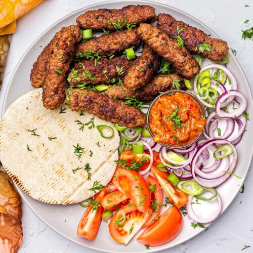

Ćevapi

Description
Ćevapi are small grilled sausages made from minced meat, and they’re one of the most iconic dishes across the Balkans, especially in Bosnia and Herzegovina, Serbia, and nearby regions.
They’re typically made from a mix of beef (sometimes with lamb or pork), seasoned simply with salt, garlic, and sometimes baking soda to keep them tender. The meat is shaped into short, finger-sized logs and grilled until nicely browned on the outside while staying juicy inside.
Ćevapi are almost always served in flatbread (like lepinja) with chopped onions, and often with sides like kajmak (a creamy dairy spread) or ajvar (a roasted pepper relish). It’s classic street food and comfort food at the same time.
Ingredients
- Ground meat (usually beef, or a mix of beef and lamb/pork)
- Garlic (finely minced)
- Salt
- Black pepper
- Baking soda (optional, for tenderness)
- Water or mineral water (helps keep them juicy)
Optionally add:
- Flatbread (lepinja)
- Chopped onions
- Kajmak or ajvar
Preparation
- In a bowl, mix ground meat with minced garlic, salt, pepper, and a little baking soda if using
- Add a small splash of cold water and knead the mixture well until it becomes sticky and uniform
- Cover and let it rest in the fridge for a few hours (or overnight if possible) so the flavors develop
- Shape the mixture into small finger-sized logs with damp hands
- Preheat a grill or grill pan to medium-high heat
- Grill the ćevapi, turning them often, until they are evenly browned and cooked through
- Serve hot in flatbread with chopped onions and optional sides like ajvar or kajmak
Homepage